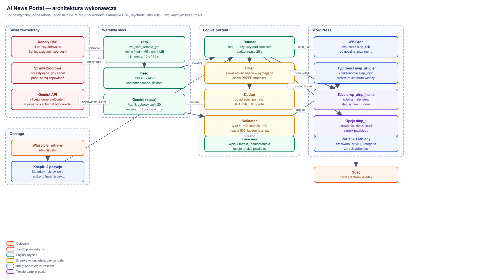
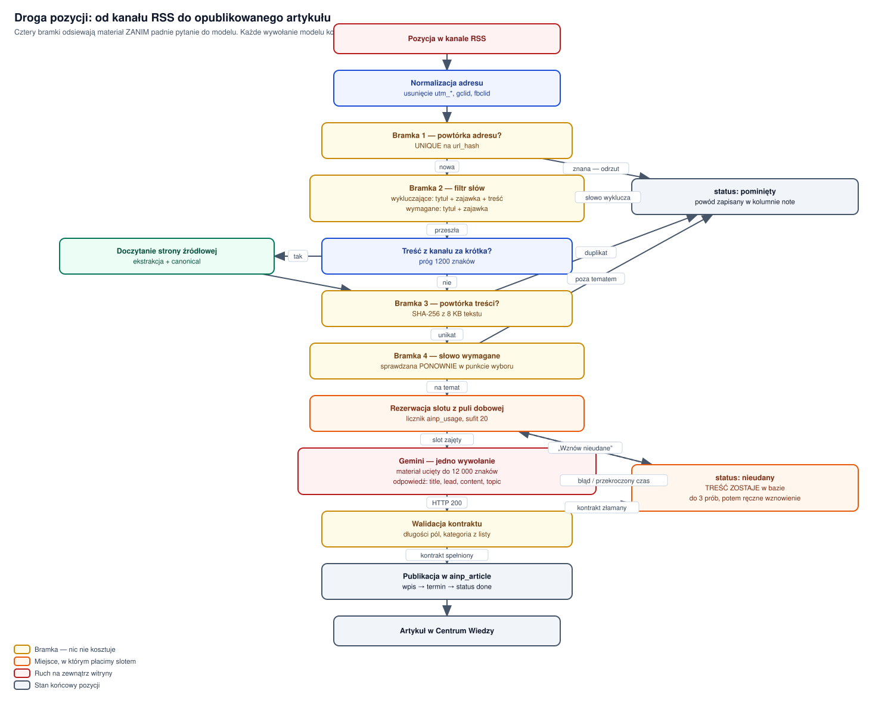
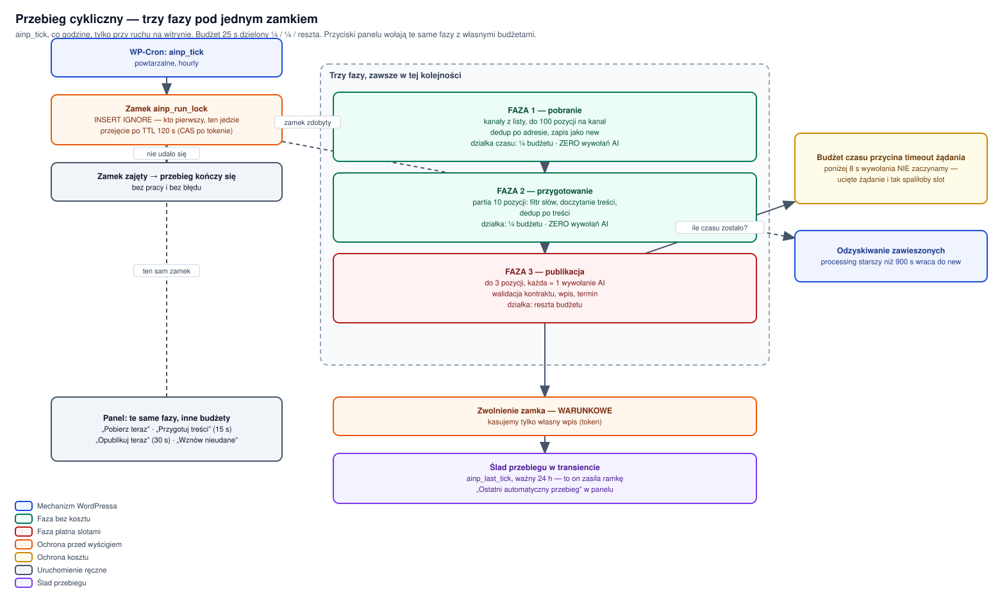

AI News Portal — co system robi
Zakres. Dokument opisuje zachowanie funkcjonalne wtyczki: co robi, w jakiej kolejności, na jakich danych i z jakimi granicami. Wymagania jakościowe są w Wymaganiach niefunkcjonalnych, formaty danych w Schema — format danych, a zachowanie samoczynne i awaryjne w Instrukcjach systemowych.
Odbiorca. Osoba wdrażająca lub utrzymująca witrynę WordPress. Zakłada się znajomość wtyczek, WP-Cron i podstaw PHP.
Źródło. Każde twierdzenie tego dokumentu pochodzi z kodu wtyczki w wersji podanej w stopce, nie z założeń projektowych.
AI News Portal {{WERSJA}} · licencja {{LICENCJA}}
Wymagania: WordPress 6.5+ · PHP 8.1+
Wtyczka WordPressa, która buduje i utrzymuje portal wiedzy, czerpiąc materiał z publicznych kanałów RSS i przepisując go modelem językowym na własne artykuły.
W odróżnieniu od typowych wtyczek treściowych nie czyta treści witryny,
na której działa. Materiał wchodzi wyłącznie z zewnątrz — z adresów RSS
podanych w Ustawieniach — i wychodzi jako wpisy własnego typu treści
ainp_article.
| System odpowiada za | System NIE odpowiada za |
|---|---|
| Pobranie i odsianie materiału, wywołanie modelu, walidację odpowiedzi, publikację, prezentację archiwum i artykułu, pilnowanie dobowego sufitu wywołań. | Merytoryczną poprawność tekstów wytworzonych przez model, prawa autorskie do treści źródłowych poza cytowaniem adresu, dostępność serwisów zewnętrznych, uruchamianie WP-Cron przy braku ruchu na witrynie. |
Jedna: Google Gemini przez punkt końcowy
v1beta/models/{model}:generateContent. Model domyślny to
gemini-2.5-flash, edytowalny w Ustawieniach. Klucz API dostarcza właściciel
witryny; wtyczka nie zawiera żadnego klucza wbudowanego.
Wszystkie pozostałe zależności to rdzeń WordPressa: wp_safe_remote_get,
WP-Cron, typy treści, taksonomie, dbDelta.
Trzy zabezpieczenia nienaruszalne — do nich sprowadza się przegląd każdej zmiany w tym systemie: nie tworzy duplikatów, nie publikuje odpowiedzi, która nie przeszła walidacji, nie zatrzymuje się na dobre z powodu pojedynczego błędu.
Siedemnaście plików w src/, jedna tabela, jeden typ
treści, jedna taksonomia. Zero wspólnego kodu z drugą wtyczką w paczce.
| Warstwa | Klasy | Odpowiedzialność |
|---|---|---|
| Cykl życia | Plugin |
Aktywacja, dezaktywacja, rejestracja typów treści, tabela, harmonogram. |
| Sieć | Http, Feed |
Żądania wychodzące z limitami i budżetem czasu; rozbiór RSS 2.0 i Atom. |
| Odsiew | Filter, Dedup, Article |
Słowa wykluczające i wymagane, powtórki po adresie i po treści, ekstrakcja tekstu. |
| Model | Gemini, Validator |
Wywołanie z wymuszonym schematem, licznik dobowy, kontrola kontraktu odpowiedzi. |
| Orkiestracja | Runner |
Trzy fazy przebiegu, zamek, budżet czasu, obsługa niepowodzeń. |
| Publikacja | Publisher |
Wpis, termin taksonomii, idempotencja, usunięcie artykułu powitalnego. |
| Kokpit | Admin, Admin_Screen, Settings |
Dwa ekrany, cztery akcje, zapis ustawień. |
| Front | Portal, szablony |
Archiwum, artykuł, kategoria, wyszukiwanie na własnym parametrze. |
| Nagłówki | Security |
Uzupełniające nagłówki bezpieczeństwa na widokach wtyczki. |

schematy/01-architektura-runtime.drawioFaza pierwsza przebiegu. Zamienia adresy RSS na wiersze w kolejce. Nie wywołuje modelu i nic nie kosztuje.
Ustalenie listy kanałów
Lista pochodzi z opcji ainp_sources. Rozróżnienie jest istotne
funkcjonalnie:
| Stan opcji | Zachowanie |
|---|---|
| opcja nie istnieje (świeża instalacja) | Cztery kanały domyślne z Settings::default_sources(). |
| opcja zapisana jako pusta tablica | Pustka — pobieranie nie robi nic. Świadoma decyzja właściciela nie jest cofana. |
Pobranie i rozbiór kanału
Żądanie GET przez wp_safe_remote_get, timeout
10 s, sufit odpowiedzi 4 MB,
do 3 przekierowań. Obsługiwane są RSS 2.0
i Atom, wraz z content:encoded i dc:date.
Normalizacja adresu i pierwsza bramka powtórek
Z adresu usuwane są parametry śledzące (utm_*, gclid,
fbclid i pokrewne), po czym liczony jest url_hash.
Kolumna ma klucz UNIQUE, więc powtórka nie ma jak wejść do tabeli
nawet przy równoległych przebiegach.
Faza druga. Odsiewa materiał i uzupełnia treść, gdy kanał podał samą zapowiedź. Nadal bez modelu. Partia to 10 pozycji.
Filtr dwustronny — wykluczenia i wymagania
Dwie listy odpowiadające na przeciwne pytania:
| Lista | Zakres przeszukania | Skutek trafienia |
|---|---|---|
| Słowa wykluczające | tytuł + zajawka + treść | odrzucenie pozycji (skipped), powód w kolumnie note |
| Słowa wymagane | tytuł + zajawka | brak trafienia = odrzucenie jako „poza tematem” |
Porównanie idzie po tekście bez znaków diakrytycznych, z granicą słowa — formy odmienione muszą być wypisane osobno.
Doczytanie treści ze strony źródłowej
Uruchamiane wyłącznie wtedy, gdy treść z kanału jest krótsza niż
1200 znaków. Żądanie GET, timeout
15 s, sufit 1 MB.
Z dokumentu wybierany jest blok o największej gęstości tekstu; wynik jest
przycinany do 20 000 znaków.
Druga bramka powtórek — po treści
Liczony jest content_hash (SHA-256) z próbki
8 KB znormalizowanego tekstu. Kolumna ma klucz
UNIQUE dopuszczający NULL, więc pozycje przed
doczytaniem treści nie kolidują ze sobą.

schematy/02-droga-pozycji.drawioFaza trzecia i jedyna płatna. Każda przerabiana pozycja to jedno wywołanie modelu z dobowej puli.
Wybór pozycji i rezerwacja slotu
Brane są wiersze o statusie new z niepustą treścią, najwyżej
3 w jednym oknie budżetu. Bramka słów wymaganych
jest sprawdzana ponownie w punkcie wyboru — ustawienia mogły
się zmienić po pobraniu.
Budowa materiału i ochrona przed wstrzyknięciem
Materiał składa się z tytułu (do 300 znaków), adresu
(do 500) i treści uciętej do
12 000 znaków. Treść jest opakowana
w ogrodzenie <<<MATERIAL_ZRODLOWY … MATERIAL_ZRODLOWY>>>,
a wystąpienia znacznika w samym materiale są neutralizowane.
Wymuszony schemat odpowiedzi
Żądanie ustawia responseMimeType na JSON oraz
responseSchema z czterema polami: title,
lead, content, topic. Pole
topic jest typu enum zbudowanego z listy kategorii
z Ustawień.
temperature = 0.4,
maxOutputTokens = 8192, sufit odpowiedzi
1 MB.
Walidacja kontraktu odpowiedzi
Wymuszony schemat gwarantuje składnię, nie sens. Po stronie wtyczki sprawdzane są:
| Pole | Warunek |
|---|---|
title | od 5 do 140 znaków |
lead | od 20 do 400 znaków |
content | co najmniej 800 znaków |
topic | dokładne dopasowanie do kategorii z Ustawień |
Sufit dobowy
Opcja ainp_usage trzyma parę data + licznik. Po osiągnięciu
wartości z pola „Sufit wywołań AI na dobę” (domyślnie
20) dalsze wywołania nie są podejmowane, a pozycja
dostaje notatkę „Wyczerpany sufit dobowy wywołań AI”.
Zamiana zwalidowanej odpowiedzi na wpis WordPressa.
Wpis i powiązania
Powstaje wpis typu ainp_article ze statusem publish
(albo draft, gdy w Ustawieniach włączono tryb szkiców). Tytuł
i zajawka trafiają w pola natywne, treść w post_content.
Kategoria z pola topic zostaje przypisana jako termin
ainp_topic.
Zapisywane meta: _ainp_item_id (powiązanie z kolejką)
oraz _ainp_source_url (adres źródła pokazywany w ramce artykułu).
Idempotencja
Wiersz kolejki niesie post_id. Powtórna publikacja tej samej pozycji
aktualizuje istniejący wpis zamiast tworzyć drugi.
Usunięcie artykułu powitalnego
Przy pierwszej publikacji ze statusem publish
kasowane są wpisy oznaczone meta _ainp_demo. Zapis szkicu
artykułu powitalnego nie usuwa — portal nie może zostać bez treści.
Cztery widoki, zero JavaScriptu, jeden punkt załamania układu (46 rem).
Adresy
| Widok | Adres |
|---|---|
| Archiwum (Centrum Wiedzy) | /centrum-wiedzy/ |
| Artykuł | /centrum-wiedzy/tytul-artykulu/ |
| Kategoria | /centrum-wiedzy/kategoria/zywienie/ |
| Wyszukiwanie | /centrum-wiedzy/?ainp_s=fraza |
Pierwszeństwo motywu
Szablony wtyczki wchodzą tylko wtedy, gdy motyw nie dostarcza własnych dla tego typu treści. Arkusz stylów wtyczki nie ustawia kroju pisma ani tła — te dziedziczy z motywu, żeby portal wyglądał jak reszta witryny.
Wyszukiwanie i paginacja
Wyszukiwarka korzysta z własnego parametru ainp_s,
nie z s WordPressa — dzięki temu nie miesza się z wyszukiwarką
witryny. Archiwum stronicuje po 10 pozycjach;
kanał RSS archiwum nie jest ograniczany tą wartością.
Zdjęcia kart
Karta bierze zdjęcie kategorii, nie artykułu — wtyczka świadomie nie pobiera zdjęć ze stron źródłowych ze względu na prawa autorskie. Każda kategoria ma do 3 wariantów pliku, wybieranych rotacyjnie w obrębie listy, więc sąsiadujące karty tej samej kategorii nie powtarzają obrazu.

schematy/04-przebieg-cykliczny.drawioJedno zdarzenie, trzy fazy, jeden zamek, jeden budżet czasu.
Harmonogram
Zdarzenie ainp_tick, powtarzalne, częstotliwość hourly.
Planowane przy aktywacji oraz domykane przy każdym starcie,
więc aktualizacja wtyczki nie gubi harmonogramu. Zapis Ustawień planuje dodatkowo
jedno zdarzenie jednorazowe.
Zamek przebiegu
Opcja ainp_run_lock zakładana przez INSERT IGNORE
— operację atomową na poziomie bazy. Wartość zamka to czas + identyfikator
przebiegu. Zamek starszy niż 120 s może zostać
przejęty przez inny przebieg (porównanie-i-zamiana po tokenie).
Budżet czasu
Przebieg cykliczny ma 25 s, dzielone ¼ na pobranie, ¼ na przygotowanie, reszta na publikację. Budżet przycina timeout żądania wychodzącego; poniżej 8 s wywołanie modelu nie jest w ogóle podejmowane.
Przyciski panelu mają własne budżety: przygotowanie 15 s, publikacja 30 s.
Odzyskiwanie i ponowienia
Pozycja w stanie processing starszym niż
900 s wraca do new. Licznik
attempts dopuszcza 3 próby
samoczynne; potem pozycja czeka na ręczne „Wznów nieudane”.
Wtyczka nie wystawia własnych tras REST ani punktów publicznych zmieniających stan. Cała obsługa idzie przez kokpit.
Uprawnienie
Wszystkie ekrany i akcje wymagają manage_options. Typ treści
korzysta ze standardowego mapowania uprawnień wpisów, więc redaktor może
edytować artykuły, nie mając dostępu do panelu wtyczki.
Cztery akcje panelu
| Akcja | Co uruchamia |
|---|---|
| „Pobierz teraz” | fazę F1 na pełnej liście kanałów |
| „Przygotuj treści” | fazę F2 na partii 10 pozycji |
| „Opublikuj teraz” | fazę F3 na maks. 3 pozycjach |
| „Wznów nieudane” | przywrócenie pozycji failed do kolejki |
Przechowywanie klucza API
Klucz leży w osobnej opcji ainp_key z wyłączonym
autoładowaniem — nie jest wczytywany przy każdym żądaniu do witryny.
Nie trafia do żadnego widoku publicznego ani do dziennika.
Polityka uzupełniająca, nigdy nadpisująca: wtyczka wysyła wyłącznie to, czego nikt wcześniej nie ustawił.
Zestawy według widoku
| Widok | Nagłówki |
|---|---|
| strona portalu | Referrer-Policy, X-Content-Type-Options,
X-Frame-Options: SAMEORIGIN, Permissions-Policy,
Content-Security-Policy ograniczone do frame-ancestors 'self' |
| osadzenie (oEmbed) | bez X-Frame-Options i bez CSP — inaczej własne osadzenie
przestałoby działać |
| kanał RSS | X-Content-Type-Options i Referrer-Policy |
| kokpit | nic — to nie jest widok wtyczki |
Dwie drogi wyłączenia
Filtr ainp_security_headers (modyfikacja lub wyzerowanie tablicy
nagłówków) oraz stała AINP_NO_SECURITY_HEADERS w
wp-config.php (całkowite wyłączenie).
| Element | Wymaganie |
|---|---|
| WordPress | 6.5 lub nowszy |
| PHP | 8.1 lub nowszy |
| Baza | MySQL/MariaDB z obsługą InnoDB |
| Ruch wychodzący | HTTPS do kanałów RSS, stron źródłowych
i generativelanguage.googleapis.com |
| Klucz API | Google Gemini, darmowy poziom wystarcza |
| Multisite | nieobsługiwane — odinstalowanie działa na pojedynczej witrynie |
/centrum-wiedzy/. Gdy 404 — zapisać
Bezpośrednie odnośniki.Domyślnie WordPress uruchamia zadania przy okazji żądań HTTP. Na nowej witrynie oznacza to brak przebiegów. Zalecane rozwiązanie:
// wp-config.php define( 'DISABLE_WP_CRON', true ); # zadanie systemowe, np. co 15 minut */15 * * * * curl -s https://twojastrona.pl/wp-cron.php?doing_wp_cron > /dev/null
| # | Sprawdzenie | Oczekiwany wynik |
|---|---|---|
| 1 | Otwarcie /centrum-wiedzy/ zaraz po włączeniu |
HTTP 200, widoczny artykuł powitalny i siedem kategorii |
| 2 | Otwarcie /centrum-wiedzy/kategoria/zywienie/ |
HTTP 200, komunikat o pustej kategorii albo lista |
| 3 | „Pobierz teraz” | Liczba nowych pozycji > 0, zero wywołań AI |
| 4 | „Przygotuj treści” | Część pozycji ze statusem pominięty i wypełnioną kolumną
Powód, zero wywołań AI |
| 5 | „Opublikuj teraz” | Co najmniej jeden artykuł, licznik wywołań AI rośnie |
| 6 | Powtórne „Pobierz teraz” bez nowych wpisów w kanałach | Zero nowych pozycji — działa bramka powtórek |
| 7 | Wyłączenie wtyczki | /centrum-wiedzy/ zwraca 404, dane w bazie nietknięte |
| 8 | Ponowne włączenie | Artykuły i kolejka wracają w komplecie |
Nie testować odinstalowania na witrynie produkcyjnej. Usunięcie wtyczki kasuje wszystkie artykuły, kategorie portalu i kolejkę bez możliwości przywrócenia.